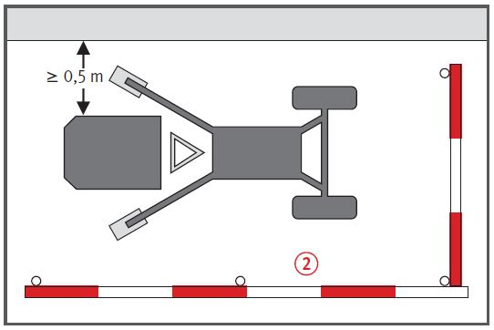
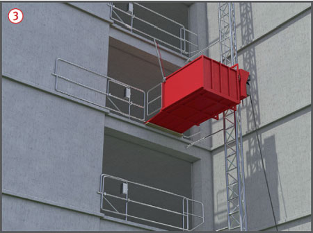

Fehlende Sicherungsmaßnahmen bei der Montage bzw. Demontage des Aufzuges sowie mangelhafte Absturzsicherung an den hochgelegenen Ladestellen können zu Absturzunfällen führen.
Es kann zu Verletzungen durch herabfallende Gegenstände kommen.
Schutzmaßnahmen
Aufstellung
Bei Auf- und Abbau von Anstellaufzügen Betriebs- und Montageanleitung des Herstellers beachten. Hieraus können u. a. die Verankerungsabstände des Fahrmastes entnommen werden.
Standsicherheit und Sicherheit gegen Einsinken des Grundrahmens bzw. des Fahrgestelles durch Abspindeln und ausreichende Lastverteilung durch Unterbauen gewährleisten .
Den beim Betrieb des Anstellaufzuges geforderten Abstand von min. 40 cm zwischen dem Lastaufnahmemittel und Arbeits- und Verkehrsbereichen bereits bei der Festlegung des Standortes berücksichtigen. Zu festen Objekten in der Umgebung der Ladestelle ist ein Abstand von min. 50 cm einzuhalten. Ist aus arbeitstechnischen Gründen der Sicherheitsabstand nicht einzuhalten: Fahrbahn dicht verkleiden.
Bei Aufstockarbeiten des Fahrmastes die Montageanleitung genau beachten. Aus ihr geht auch hervor, ob PSA gegen Absturz zu tragen ist.
Betrieb
Für den elektrischen Anschluss nur einen besonderen Speisepunkt verwenden, z. B. Baustromverteiler mit Fehlerstrom-Schutzeinrichtung (RCD).
Schlaffseilbildung vermeiden, wenn es sich um einen seilgetriebenen Aufzug handelt.
Die Bedienung des Anstellaufzuges erfolgt durch eine beauftragte Person,
die die Aufzugsanlage regelmäßig auf augenscheinliche Mängel überprüft.
Der Personentransport mit dem Lastenaufzug ist verboten.


Zusätzliche Hinweise zur Unteren Ladestelle
Absperren des Gefahrbereiches , Zugang nur von einer Seite. Bei Gefahr durch herabfallende Gegenstände: Schutzdach anbringen.
Zusätzliche Hinweise zur Oberen Ladestelle
An hochgelegenen Ladestellen sind Absturzsicherungen erforderlich . Vom Hersteller des Anstellaufzuges vorgesehene Ladestellensicherung verwenden. Seitenschutz, bestehend aus Geländerholm, Zwischenholm und Bordbrett oder Türen oder Hubgitter, von mindestens 1,00 m Höhe vorsehen.
Seitenschutz nur während des Be- und Entladens betretbarer Lastaufnahmemittel in der Breite des Lastaufnahmemittels öffnen. (Lastaufnahmemittel mit einer Grundfläche von mehr als 0,5 m2 gelten im Allgemeinen als betretbare Lastaufnahmemittel.)
Lastaufnahmemittel nur betreten, wenn
das Betreten vom Hersteller vorgesehen ist,
sie mit einem min. 1,10 m hohen Schutzgeländer umwehrt sind und
durch Geschwindigkeitsbegrenzer ausgelöste Fangvorrichtungen oder Leitungsbruchventile ein unbeabsichtigtes Absenken (z. B. durch Bruch des Hubseils) verhindern.
Prüfungen
Art, Umfang und Fristen erforderlicher Prüfungen festlegen (Gefährdungsbeurteilung) und einhalten, z. B.:
vor Inbetriebnahme am jeweiligen Einsatzort (Aufstellung) durch fachkundige Person,
entsprechend den Einsatzbedingungen nach Bedarf, mind. 1 x jährlich durch eine "zur Prüfung befähigte Person" (z. B. Sachkundiger).
Ergebnisse der regelmäßigen Prüfung durch die "zur Prüfung befähigte Person" dokumentieren.